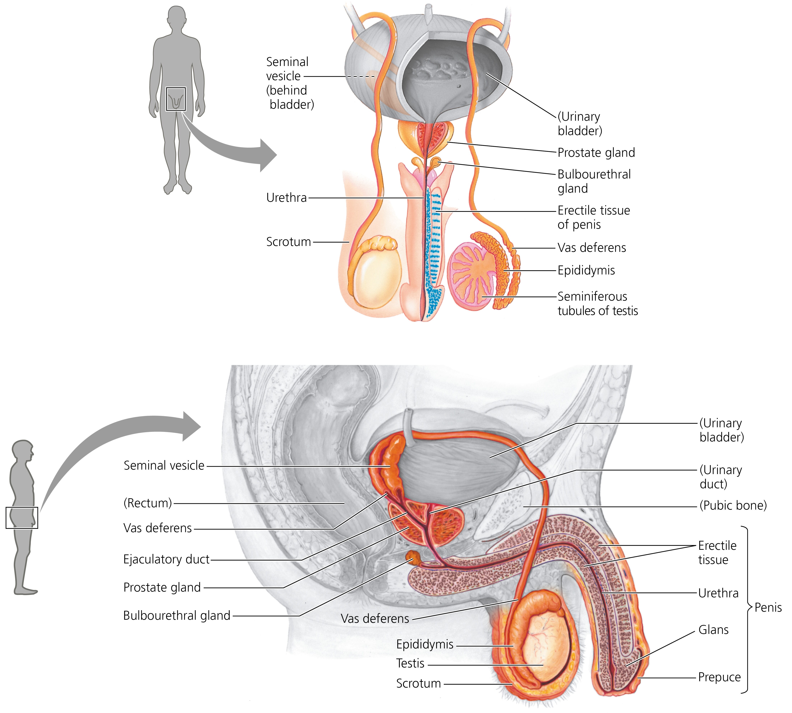
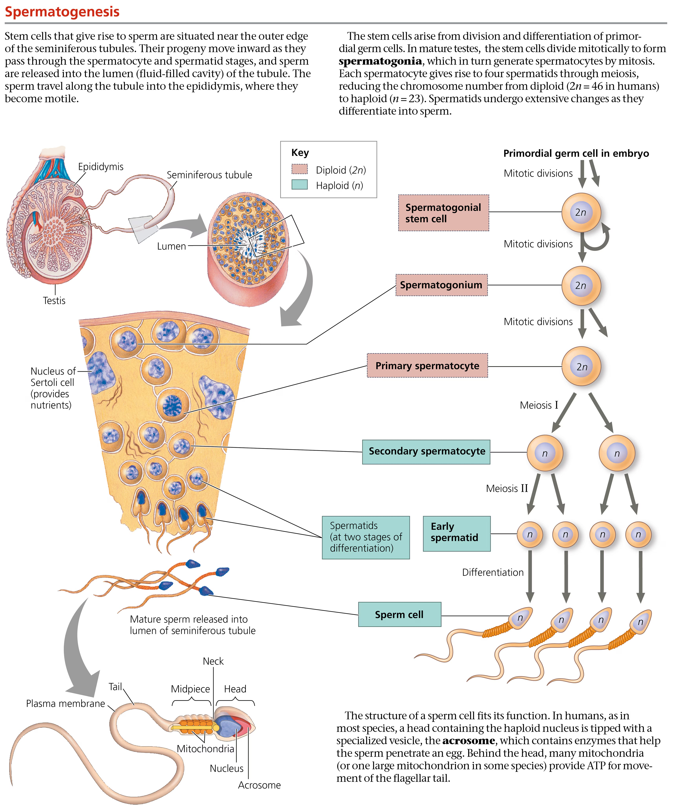
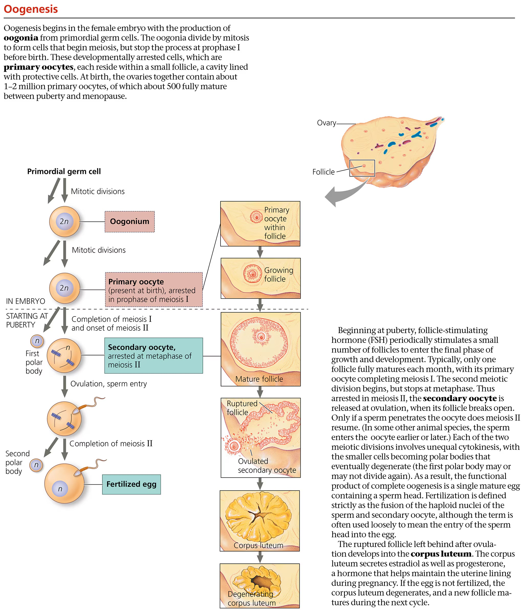
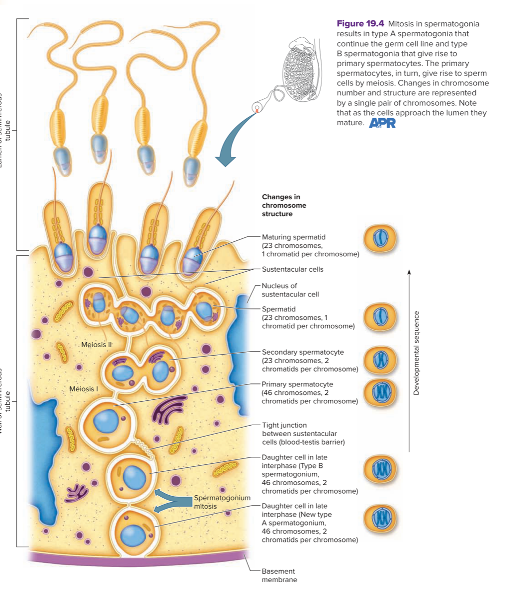
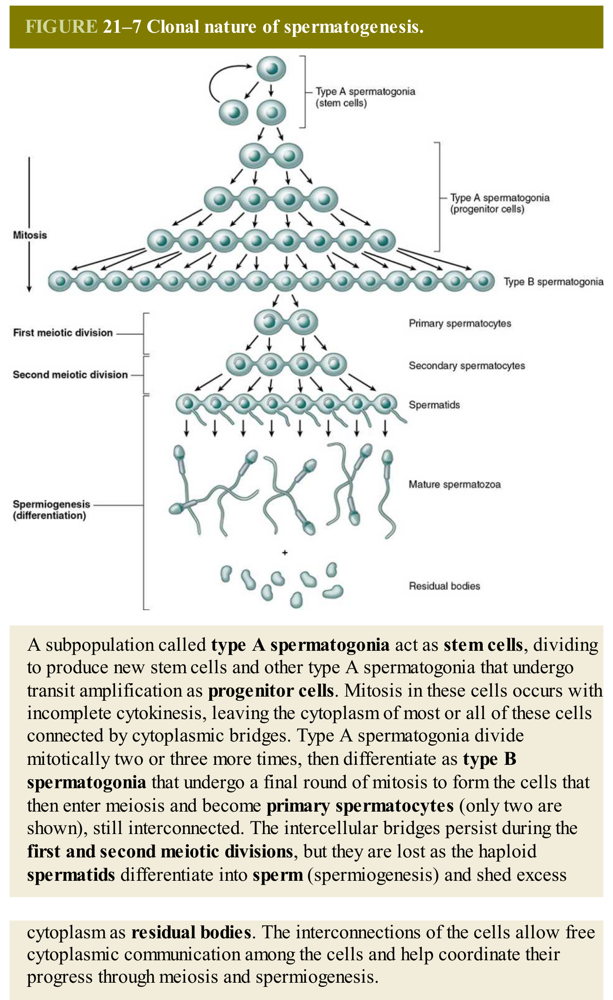
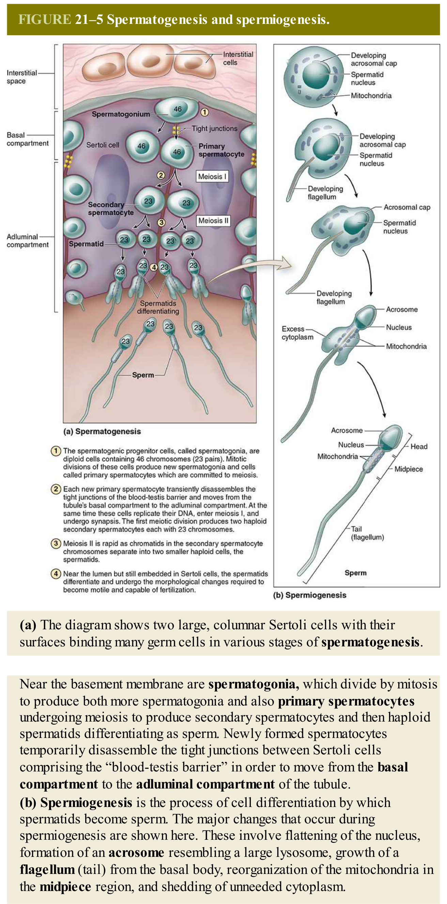
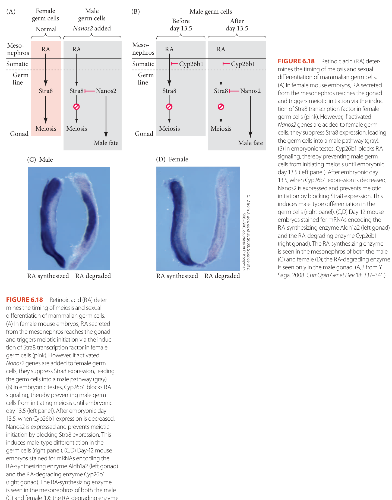
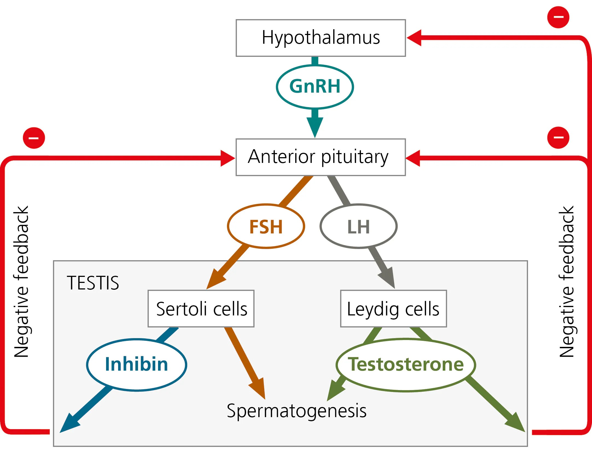

點擊放大圖證 1｜Campbell 13e 圖 46.9：人類男性生殖解剖與睪丸細精管、副睪管路
呈現在陰囊（較核心體溫低約 2°C）內的睪丸細精管、盤繞 6 公尺的副睪、輸精管、射精管、三大附屬腺（儲精囊、攝護腺、尿道球腺）及尿道位置，先建立精原細胞所處之解剖管路定位。
Figure 46.9 Reproductive anatomy of the human male (Campbell Biology, 13th ed., Ch. 46).
讀《Hole 15e》時常看到「精原細胞每次分裂產生一個 A 型維持未分化、一個 B 型成初級精母細胞，且胚胎期就停在該階段」——對照《Campbell 13e》、《Junqueira 17e》、《Gilbert 13e》、《Vander 16e》等正典與高中六版課本後，哪些是入門簡化、哪些才是真實分子與組織學機制？
精原細胞（spermatogonia）是基底層二倍體生殖前驅細胞的總稱：包含深染低頻分裂的幹細胞、以不完全胞質分裂（細胞質橋）相連的暫時擴增 A 型前驅細胞，以及進行最後一輪有絲分裂的 B 型精原細胞。B 型仍是 2n，差別在幹細胞微環境訊號傾向（GDNF 維持自新 vs. BMP/Wnt 與 RA—STRA8 推進分化），而非染色體套數。
儘管《Hole 15e》與《Fox 16e》簡寫為胚胎期已形成初級精母細胞並暫停，但《Gilbert 13e》以分子證據指出：胚胎睪丸分泌 Cyp26b1 降解視黃酸（RA）、以 Fgf9 與 Nanos2 抑制 Stra8，刻意阻斷雄性生殖細胞啟動減數分裂，使其停滯於有絲分裂成為精原細胞；直到青春期賽托立氏細胞合成 RA 誘導 Stra8，才正式啟動減數分裂。
新形成的初級精母細胞暫時拆解賽托立氏細胞緊密連接，由基底隔室遷入近腔隔室（加上缺 MHC 與 FasL 誘導 T 細胞凋亡形成免疫豁免）；同一殖株以細胞質橋共享 X 染色體基因產物讓 Y 精子得以發育；最後經 spermiogenesis（Protamines 取代組蛋白、排除殘餘體）塑形並由副睪成熟，全長約 64～74 天。
不同教科書依教學目標對「如何同時保住幹細胞庫、又不斷產出精母細胞」採取不同精細度的模型，讀書與命題時必須分清各教材的簡化層級：
| 教材來源 | 幹細胞與精原細胞分類模型 | A／B 型區分 | 關鍵機制與命題注意 |
|---|---|---|---|
| Campbell 13e （Ch. 46 基準正典） |
幹細胞（stem cell）→ 精原細胞（spermatogonium）→ 初級精母細胞 | 否 | 圖 46.11 與習題 9 明確區分「幹細胞」與「精原細胞」，並追問若幹細胞皆像精原細胞般直接分化，幹細胞庫將會耗竭。 |
| Hole 15e （Ch. 19） |
每次有絲分裂產生 1 個 A 型（維持未分化）＋ 1 個 B 型（分化成初級精母細胞） | 是（僅 A／B） | 入門級簡化示意，便於理解「一邊留底、一邊前進」，但不代表實務上每次分裂都嚴格 1:1 不對稱。 |
| Vander 16e （Ch. 17） |
幹細胞分裂形成克隆（clone）循環；早期有 1 個細胞「退出（drops out）」循環維持儲備 | 是（僅 A／B） | 強調以殖株動態平衡維持儲備；B 型移動離開基底膜、穿過血睪屏障成為初級精母細胞。 |
| Junqueira 17e （Ch. 21 組織學） |
深染卵圓核 A 型（低頻幹細胞）→ 淡染卵圓核 A 型（暫時擴增前驅）→ 圓形淡染核 B 型 → 初級精母細胞 | 是（核形態細分） | 明確指出「A 型不等於全部未分化」；進入暫時擴增即行不完全胞質分裂，形成可達約 100 個細胞的生精合胞體。 |
| Gilbert 13e （Ch. 06 發育學） |
基底幹細胞微環境（Sertoli＋Leydig＋血管）；A 型具脆弱細胞質橋，單一細胞可脫離重返幹細胞 | 是（且比對物種） | 訊號決定命運：Dmrt1 → Sertoli GDNF 維持自新；BMP／Wnt 推向分化；RA—STRA8 促成減數分裂承諾。小鼠 12 輪擴增（16 細胞連群），人類僅 5 輪（連結限約 4 細胞）。 |
| Sherwood ／ Sadava 12e | 精原細胞有絲分裂維持生殖系，並由細胞質橋連接後代至精子成熟 | Sherwood 提 A 型 | 強調細胞質橋使四個精母細胞／精細胞共享 X 染色體基因產物，拯救僅帶 Y 染色體的精細胞存活與發育。 |
| 高中 6 版整合 （選修 III ／ 必修一） |
精原細胞以有絲分裂自我增殖，部分分化為初級精母細胞（2n） | 否 | 翰林、龍騰明述精原細胞具幹細胞特性；三民必修一區分「生殖原細胞（精原／卵原）」與「生殖母細胞（初級精／卵母）」。 |
把《Hole 15e》與《Gilbert 13e》、《Campbell 13e》及高中六版課本並排比對時，會發現一個極易在教甄或備課時混淆的陳述差異：
| 教科書陣營 | 代表書目與章節 | 原文核心敘述 | 現代發育學與教學判準 |
|---|---|---|---|
| 「胚胎期形成初級精母細胞並暫停」說 | Hole 15e（Ch. 19） Fox 16e（Ch. 20） Vander 16e（§17.1；但 §17.6 改寫為「青春期前靜止」） |
Hole 稱胚胎期荷爾蒙刺激精原細胞分裂產生 A／B 型與初級精母細胞，生精「在此階段暫停」；Fox 英文原文亦寫初級精母細胞形成與進入早期前期 I 始於胚胎期並 arrested at this point until puberty。 | 屬部分人體生理課本的傳統／簡化敘述，未納入哺乳類胚胎睪丸抑制減數分裂的分子證據；連 Vander 本書 §17.1 與 §17.6 前後亦出現張力。 |
| 「胚胎期停滯於有絲分裂，青春期才啟動減數分裂」說 | Gilbert 13e（Ch. 06） Campbell 13e（Ch. 46） Junqueira 17e（Ch. 21） Guyton & Hall 15e（Ch. 81） 高中 6 版 |
Gilbert 13e 明言「雌性在胚胎性腺開始減數分裂；雄性則要到青春期才開始」：胚胎睪丸由 Fgf9 下調 Stra8、分泌 Cyp26b1 降解來自中腎的視黃酸（RA），並由 Nanos2 阻斷 Stra8，使雄性生殖細胞「停滯於有絲分裂成為精原細胞」；青春期時 Sertoli 細胞合成 RA 誘導 Stra8 才啟動減數分裂。 | 現代發育生物學與臺灣高中課綱一致採用的精準機制。男、女配子發生最核心的時序對照，正是「男性出生前停在有絲分裂、青春期才進入減數分裂」vs.「女性胎兒期即進入前期 I 雙線期並停滯 12～40 年」。 |
| 發育階段 | 分裂方式 | 染色體條數（套數） | DNA 相對量 ／ 染色分體狀態 | 隔室位置與關鍵特徵 |
|---|---|---|---|---|
| A 型精原細胞（幹細胞／暫時擴增） | 有絲分裂 | 46 條（2n） | G₁ 期 2C（1 分體/條） S 期後 4C（2 分體/條） |
位於基底隔室（屏障外）；暫時擴增期開始形成細胞質橋 |
| B 型精原細胞 | 最後一次有絲分裂 | 46 條（2n） | G₁ 期 2C → S 期後 4C | 高表現 STRA8；仍在基底隔室，分裂產生 2 個初級精母細胞 |
| 初級精母細胞（Primary spermatocyte） | 減數分裂 I | 46 條（2n） | 4C（每條含 2 條姊妹染色分體） | 暫時拆解緊密連接移入近腔隔室；前期 I 極長（約 3 週／三民記 24 天），切片最常見 |
| 次級精母細胞（Secondary spermatocyte） | 減數分裂 II | 23 條（n） | 2C（每條仍含 2 條姊妹染色分體） | 近腔隔室；壽命極短、不經 S 期即進入減 II，切片少見 |
| 精細胞（Spermatid） | 無分裂（進行 Spermiogenesis） | 23 條（n） | 1C（每條僅 1 條染色分體） | 單倍體核但藉細胞質橋功能上互補；人類全長生精約 64～74 天（Campbell 記約 7 週） |
| 成熟精子（Spermatozoon） | — | 23 條（n） | 1C（魚精蛋白高度凝縮染色質） | 排精至管腔後移往副睪成熟（Campbell 記約 3 週具運動力）；女性生殖道內完成獲能 |

點擊放大呈現在陰囊（較核心體溫低約 2°C）內的睪丸細精管、盤繞 6 公尺的副睪、輸精管、射精管、三大附屬腺（儲精囊、攝護腺、尿道球腺）及尿道位置，先建立精原細胞所處之解剖管路定位。
Figure 46.9 Reproductive anatomy of the human male (Campbell Biology, 13th ed., Ch. 46).

點擊放大普通生物學基準正典清楚標出外緣的精原幹細胞（spermatogonial stem cell）先經有絲分裂自我更新並產生精原細胞（spermatogonium），再經有絲分裂產生初級精母細胞，其子代逐步向細精管管腔推進、於塞托利細胞（Sertoli cell）包圍下完成兩次減數分裂與分化，最後移往副睪成熟。
Figure 46.11 Exploring Human Gametogenesis: Spermatogenesis (Campbell Biology, 13th ed., Ch. 46).

點擊放大對比圖證 2 可一目了然：女性在 IN EMBRYO 時期即產生初級卵母細胞並停滯於減數分裂前期 I，出生後不再新增，且減數分裂呈極不均等分裂；反觀男性青春期起由幹細胞連續補位並均等產出 4 個精子，不提前於胚胎期停滯在減數分裂。
Figure 46.11 Exploring Human Gametogenesis: Oogenesis (Campbell Biology, 13th ed., Ch. 46).

點擊放大本圖以「1 個 A 型留底、1 個 B 型前進」作為教學簡圖，並明確畫出藍色支持細胞之間的緊密連接（血睪屏障）；閱讀時應注意實務上並非每次分裂固定產出 1 個 A 型與 1 個 B 型，而是靠殖株族群維持動態平衡。
Figure 19.4 Mitosis in spermatogonia results in type A and type B spermatogonia (Hole's Human Anatomy & Physiology, 15th ed., Ch. 19).

點擊放大組織學正典補足了入門圖漏掉的關鍵細節：A 型精原細胞包含彼此分離的幹細胞，以及行不完全胞質分裂的暫時擴增前驅細胞；細胞質橋一路維持過 B 型精原細胞、初級／次級精母細胞與精細胞，直到精子形成時排除殘餘體（residual bodies）才切斷。
Figure 21–7 Clonal nature of spermatogenesis (Junqueira's Basic Histology, 17th ed., Ch. 21).

點擊放大左圖（a）呈現新形成的初級精母細胞如何暫時拆解緊密連接、從基底隔室移入近腔隔室而不破壞血睪屏障；右圖（b）呈現精細胞在無分裂下進行胞器重塑：頂體帽擴展、鞭毛由基體長出、粒線體集中於中段並排出多餘細胞質。
Figure 21–5 Spermatogenesis and spermiogenesis (Junqueira's Basic Histology, 17th ed., Ch. 21).

點擊放大證實男性胚胎不會先進入減數分裂：雖然中腎會分泌視黃酸（RA），但胚胎睪丸在胚胎第 13.5 天前分泌 Cyp26b1 降解 RA，第 13.5 天後由 Nanos2 抑制 Stra8 表現，鎖住減數分裂守門員，使生殖細胞停留在有絲分裂狀態（精原細胞），直到青春期才由 Sertoli 細胞合成 RA 重啟。
Figure 6.18 Retinoic acid (RA) determines the timing of meiosis and sexual differentiation of mammalian germ cells (Gilbert Developmental Biology, 13th ed., Ch. 6).

點擊放大GnRH 驅動腦垂腺前葉分泌 FSH 與 LH：FSH 刺激塞托立細胞協助生精並分泌抑制素（inhibin）選擇性負回饋腦垂腺前葉；LH 刺激萊迪希細胞分泌睪固酮促進生精，並對腦垂腺前葉與下視丘施以負回饋。
Figure 46.13 Hormonal control of the testes (Campbell Biology, 13th ed., Ch. 46).
高一／高三課堂準繩：依現行六版課本，「精原細胞位於細精管外緣、具幹細胞特性（翰林／龍騰）、青春期後啟動產生初級精母細胞，一個初級精母細胞均等產生四個精子」。教甄筆試與口試深化：必須補齊賽托立氏細胞（血睪屏障、ABP、抑制素、乳酸滋養、吞噬殘餘體）、細胞質橋共享 X 基因產物、Spermatogenesis vs. Spermiogenesis，以及 RA—STRA8／Cyp26b1／Nanos2 解釋為何雄性胚胎不提前啟動減數分裂。
Vault 原典直接支持：以上 11 部大學譯本、高中六版跨版本整合及 114／115 教甄試題皆已完成本機知識庫原文比對並建立 ^anchor 區塊錨點（概念問答庫筆記：精原細胞與生精歷程_幹細胞分化與曲細精管調控.md）。
Vault 內未見之術語與細節：人類精原細胞古典縮寫 Ad（A dark）與 Ap（A pale）在《Junqueira 17e》Ch. 21 中已有「dark, ovoid nuclei」與「pale-staining, ovoid nuclei」之完整組織學描述，但全 Vault 實際檢索皆未出現「Ad／Ap」縮寫字樣，故本頁不將該縮寫硬套為所有哺乳類通用分類（例如小鼠係採 As／Apr／Aal 體系）。